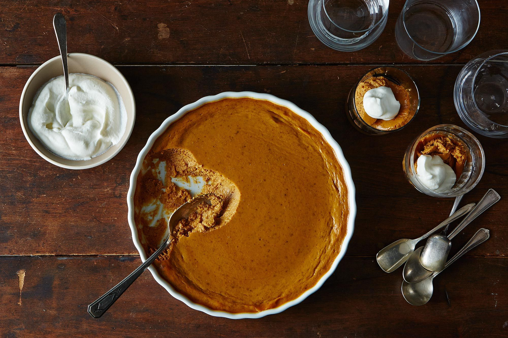

Pumpkin Pie Pudding

Description
Because with everything we have to eat for Thanksgiving, who needs extra pastry, anyway?
Ingredients
- 3/4 cup granulated sugar
- 1 teaspoon ground cinnamon
- 1/2 teaspoon ground ginger
- 1/2 teaspoon kosher salt
- 1/4 teaspoon ground cloves
- 2 large eggs
- 1 (15-ounce) can pumpkin purée
- 1 (12-ounce) can evaporated milkv
- Whipped cream, for serving (optional)
Instructions
- Heat the oven to 350°F. In a small bowl, mix the sugar, cinnamon, ginger, salt, and cloves.
- In a large bowl, beat the eggs to blend. Stir in the pumpkin purée and sugar-spice mixture. Gradually stir in the evaporated milk.
- Pour into glass or ceramic baking dish. A good thing to know is that you can fill a baking dish deeper than a pie crust, but it’s best not to exceed a depth of about 1½ inches. Baking times vary with the depth, size, and type of baking dish, so you just have to watch and check. Bake until a knife inserted near the center comes out clean. Let cool on wire rack, then refrigerate overnight, until ready to serve. Serve with the whipped cream, if using.
Home